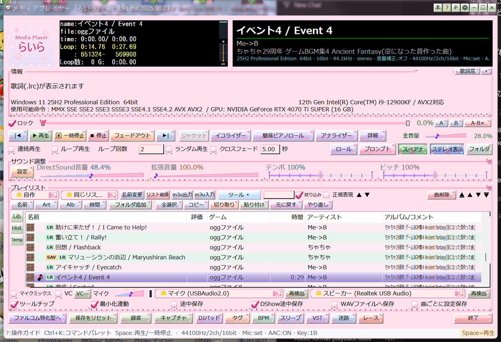

A playlist holds your tracks, but more than that it is the way in to everything you might do to a track. Right-click a row and you get the lot, from tag editing to export.

Playlists appear in the lower part of the main screen
| Item | What it does |
|---|---|
| File Info | Viewing and fixing file info |
| Edit tags | Editing tags |
| Audio export | Audio export (WAV / mp3 / FLAC) |
| Playback details | Playback details |
| Analyzer / piano roll | Waveform and spectrum analyzer / Seeing the music on a piano roll |
| Set chapter | Tag rows as Warmup / Peak / Cooldown to plan how a set flows |
| Undo delete | Brings back the row you just removed — one step only |
To vary volume or EQ per track, use Save per-song. Starred tracks come back with their saved settings the next time they play.
Video rows and unplayable entries are skipped automatically during continuous play, so you can keep music and video in one list and still let the music run. To watch a video properly, see Playing video.